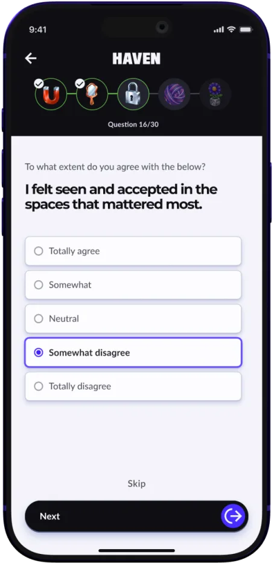
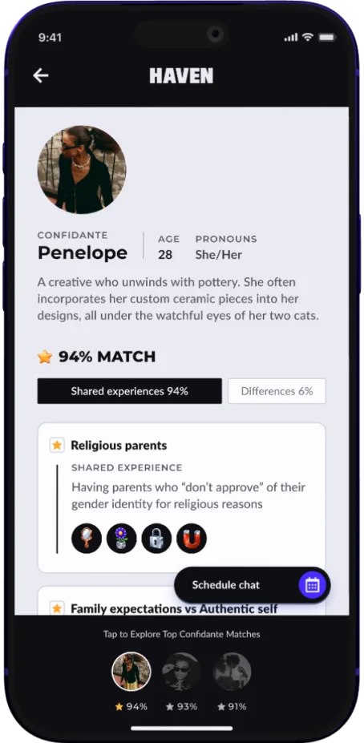
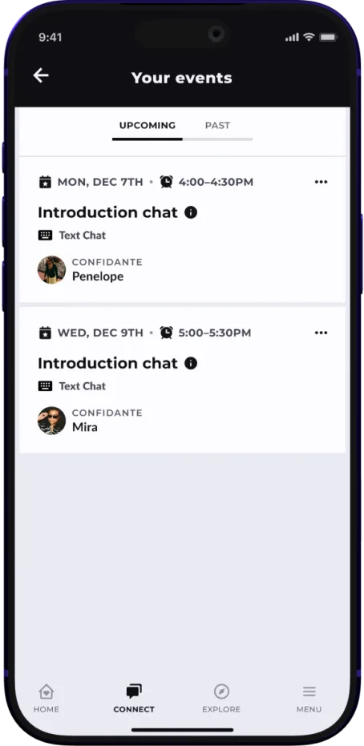
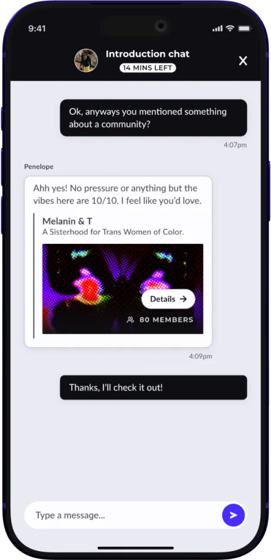
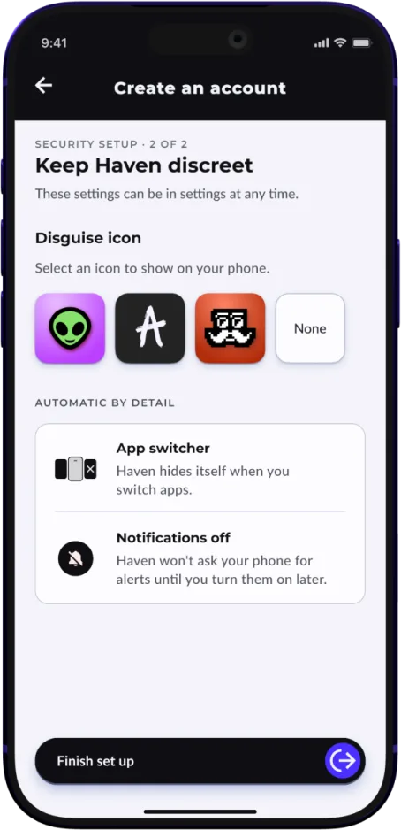

A quiz pairs users with Confidantes who share their experiences.
Where things stand
To be understood and to be safe.

A quiz pairs users with Confidantes who share their experiences.

Profiles lead with the experiences a user and Confidante share.

Intro chats are text based only. Built for a time the user can be alone.

An intro chat comes first, so users can see if it feels right.

Haven can hide behind a different icon on the user’s phone.
Identity was the first phase.
Community is next.